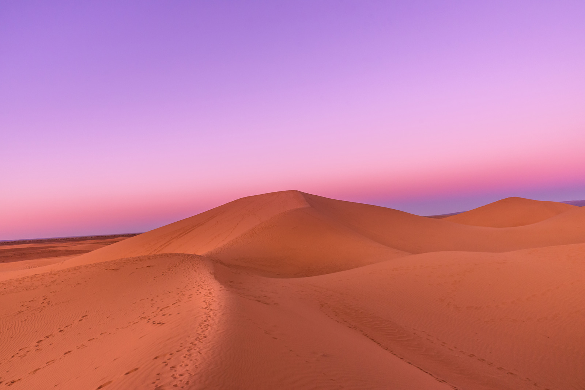
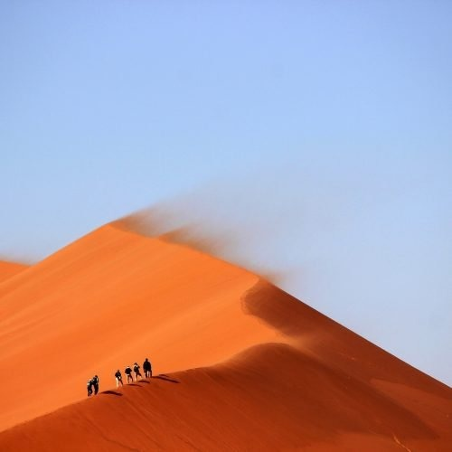
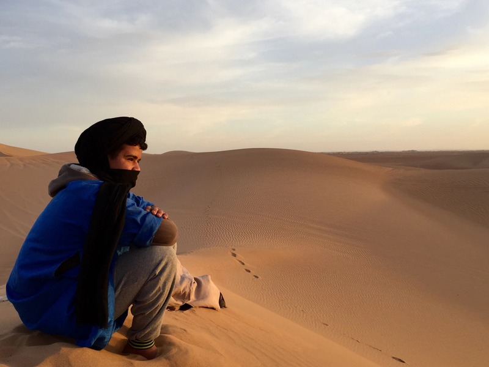
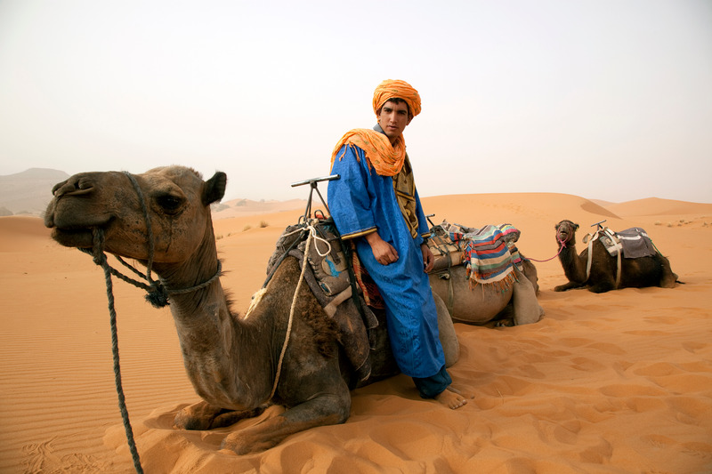
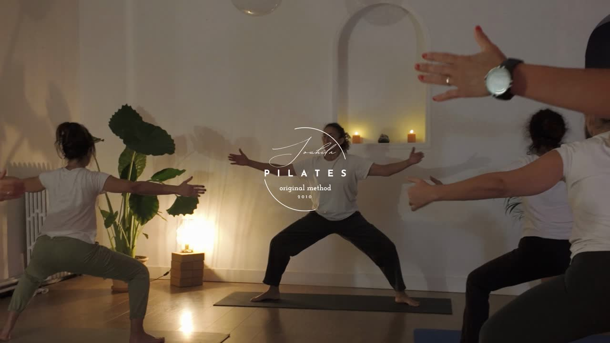

Pendant 7 jours et 6 nuits, vivez une immersion inoubliable au cœur du Sahara avec Souhila Chekara : trekking, yoga au lever du soleil, rencontres nomades et reconnexion profonde.




Inclus : transferts aller-retour entre M'hamid et les points de départ/arrivée, équipe nomade (guide saharien, chameliers), transport des bagages par dromadaires, bivouac chaque soir, tous les repas dans le désert, eau potable filtrée, matériel de campement (tentes, matelas, couvertures).
Non inclus : vol jusqu'à Marrakech ou Ouarzazate, repas en ville avant/après le trek, boissons et achats personnels, assurance rapatriement, pourboires pour l'équipe nomade.
À prévoir : sac de couchage, grand sac et petit sac à dos, chaussures de marche, sandales, vêtements chauds, gourde (1–2 L), crème solaire, casquette, lunettes, lampe frontale, trousse de toilette et appareil photo.
